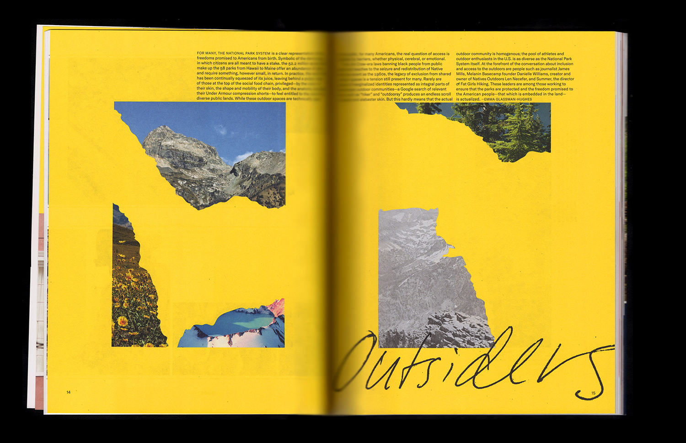
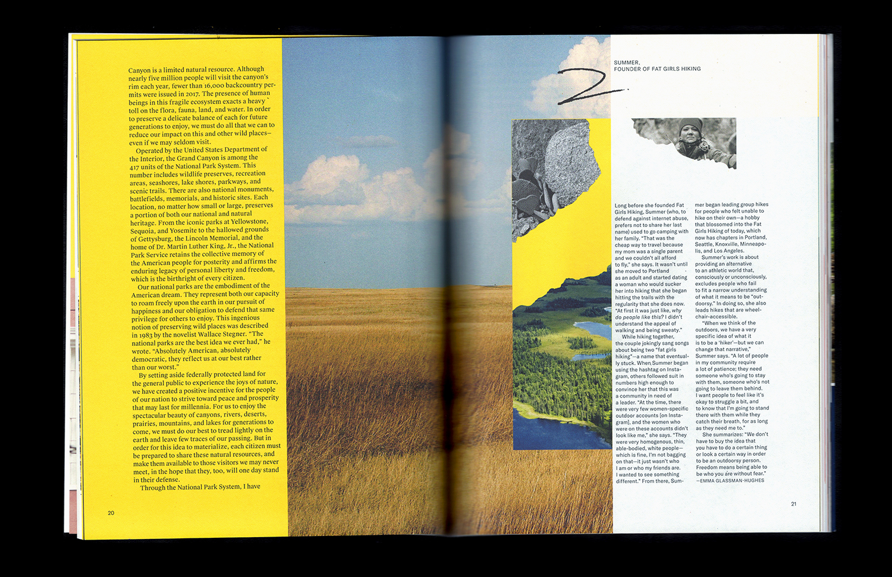
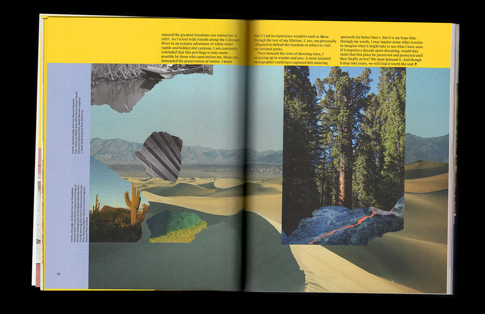
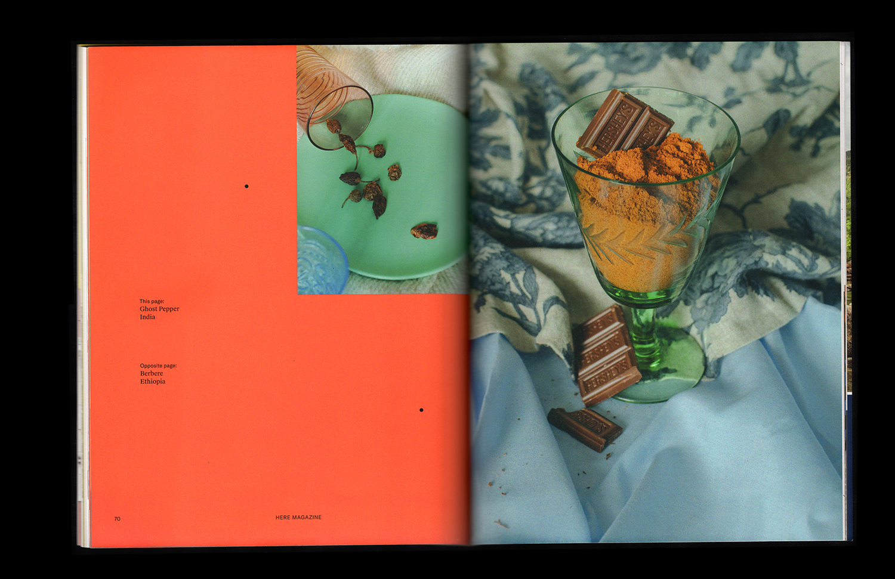
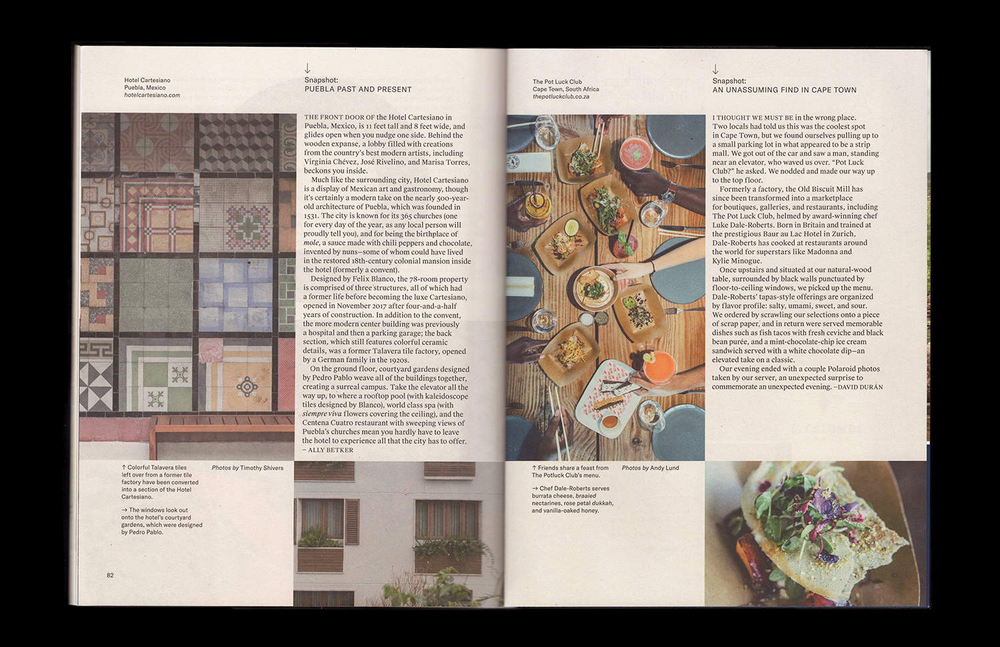

Issue No. 6
Here Magazine (Away)
Issue (84pp, cover with spot blue and emboss)
2018
Here Magazine is a travel publication with an indie heart and a focus on people. For my first issue as its designer and art director, I refreshed the interior and introduced custom openers, preserving the minimalist feel of the previous issues, and worked with the existing cover template and masthead. I collaborated closely with the editorial team to produce each story, handling everything from prop styling to photo collage to fine typesetting. Contributors include cartoonist Liana Finck, photographers Que Duong and Vanessa Granda, and writer Marjon Carlos.
'To Shell and Back', a guide to five of the world's best oyster destinations:
'Outsiders', about U.S. National Parks and outdoor activism:

'Corazon y Alma', about the therapeutic creative scene rising in Buenos Aires:
 'Spice of Life', introducing spices of the world and the chefs who know them best:
'Spice of Life', introducing spices of the world and the chefs who know them best:

And more... :
